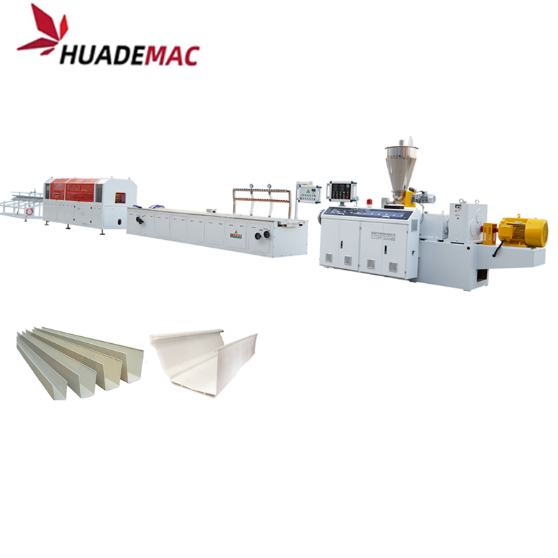

PVC Rain Gutter Extrusion Line
Form PVC rain gutters with profile tooling and a downstream calibration table.
Inquire about this product Prepare a detailed project brief
Equipment overview
The typical layout for a PVC rain guttermanufacture includes the following modules:
Conical twin screw extruder
Calibration table
Caterpillar haul-off
Cutting units
Tilting table
Auxiliary equipments
Conical Twin Screw Extruder
The SJSZ-series extruder is designed for the PVC profile application.
We target to provide the optimal solutions for the customer’s special needs with the advantage of flexibility in material choices, high performance and long durability.
High flexibility in raw material combinations
Gentle and homogeneous plastifcation
Barrel with air cooling system
AC motors for low energy consumption
Control panel can be optional with PID temperature instrument or PLC touch screen
Die Head
Materials: 40Cr Steel
Single cavity design
Calibration Table
Motor-driven height and side movement
Motor-driven longitudinal movement
Manuel tilting movement
All parts that are in contact with water is made of stainless steel
Low maintenance cost
Caterpillar Haul-Off
Synchronous control
Upper and lower caterpillar is driven separately by the frequency inverter
Frequency Motor/servo motor driving
High friction fact and anti-wear out silicon rubber Pads
Metering counter device
Cutting Units
Universal or Cast Aluminium fixture unit
High Quality Alloy Blades
Smooth Cutting surface;
Tilting Table
Stainless steel 304 as touching material
Discharge driving by air cylinder
Technical specifications
Reference configurations from the product catalogue. Confirm output, dimensions and equipment selection for your material and project.
| Extruder | SJSZ65/132 |
|---|---|
| Main Motor Power | 37kw |
| Capacity | 200-250Kg/h |
| Space occupation | L.28MXW.4MxH.3M |
| Control | PID |
Detailed Images
Application
Equipment video
Ask about this machine
PVC Rain Gutter Extrusion Line